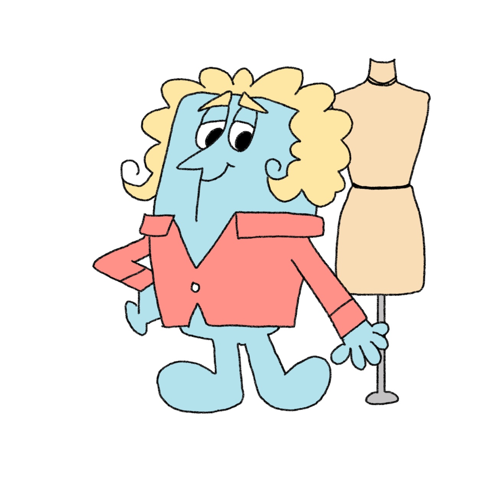

INFP - 패션산업디자인학과
- 내향적, 직관적, 감정적, 전망적인 성격특성을 가진 사람입니다.
- 이 희귀한 성격 유형은 조용하고 개방적이며 상상력이 풍부한 경향이 있으며 모든 일에 배려하고 창의적인 접근 방식을 적용합니다.
- 각 예비 디자이너의 창의성을 바탕으로 한 발상에서, 디자인, 구성, 제작에 이어 스타일링까지 완성도 있는 졸업작품은 세상에 선보이고 세상과 소통합니다. 이러한 교육과정을 통해 졸업생들은 각자의 진로에 맞는 취업을 위해 미리 대비하고 우수한 인재로 사회에 배출됩니다.